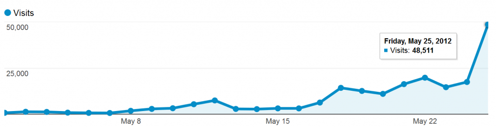

There have been a few times over the last two weeks when I thought traffic to ORBIS was finally leveling off. The novelty factor of the work is high–there are very few Imperial Roman Mapquests, or Google Maps for Rome, or Ancient Roman Garmins, or other interesting attempts to express what the site does that’s just so intriguing. And I’m perfectly happy to take advantage of novelty to raise the profile of digital humanities work, the work done here at Stanford, and especially the work being done by modern university libraries. But while I’m sure that there will be a general level of traffic to the ORBIS site that will be lower than its honeymoon peak, that honeymoon peak is starting to get serious.

Articles in Bild, The Atlantic, and the Daily Mail have raised the visibility of ORBIS among traditional audiences, but the true drivers of traffic are places like io9, Ars Technica, Fark, Reddit, Facebook, and Twitter. As a result of all this traffic, I’ve had to learn about Varnish and pgpool-II, and otherwise learn what goes into making web sites that receive more than a couple hundred visits a day. ORBIS has been able to handle its unexpected popularity with the timely support of Digital Library Systems and Services, which has had experience building and running high-traffic, production sites. It’s gotten to the point, though, that we’ve left up the generic warning about site performance. By June 5th, if we make it that far, we’ll have a much more robust infrastructure in place to support ORBIS and other interactive scholarly works like it. As someone who has been arguing that it’s the right time to pursue this kind of infrastructure, I feel exhilarated and not a little terrified.Only time will tell if ORBIS maintains any significant portion of its current popularity but if it does, and I think it will, then it signals something as exciting as the popularity of Stanford’s massive on-line courses. ORBIS is still a rather crude example of what an interactive scholarly work can be, but it evokes such enjoyment from readers that they actively engage with and share it. As Rebecca Rosen described in the Atlantic:
Rather than encounter history as a linear story, we see it as a world more like our own, one in which we’re actors with sets of competing choices laid out before us.
In this sense, the interactive nature of ORBIS, and that it uses a standardized format to present that interactive nature, is not really novel, but simply expressive of knowledge in a format that readers are now more accustomed to receive. Presenting geographic network information in the form of a tiled map with a route-finder interface is actually not new or exciting, just as putting symbols, in ink, on paper is not. Rather it’s the right format for the expression of this kind of knowledge and, more importantly, a format for which we can have high expectations of literacy.
There are many timelines that have been torn asunder by the response to ORBIS, and I’d like to take a moment to point out that we will be releasing the code, not only for the site but for all the PostGIS functions and PHP data services that it requires, so that anyone can build their own version for another state or period. There is also one more component to ORBIS, a proof-of-concept view into the network from a different perspective and inspired by other media, but we can’t turn that on until we’re sure that we can handle the increased traffic.